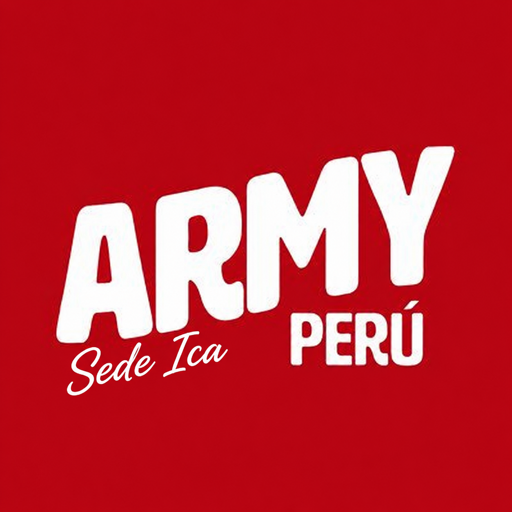

Calendario
Eventos de la sede y fechas oficiales diferenciadas por color.

ARMY PERÚComunidad ARMY en Ica
Actividades, calendario, streaming, campañas y actualizaciones reunidas en un solo lugar.

Eventos de la sede y fechas oficiales diferenciadas por color.
Actualizaciones de Facebook, X/Twitter, Instagram y TikTok.
Metas, avances y logros de la base en YouTube, Spotify y Apple Music.
Agenda
Los eventos marcados como Sede Ica pertenecen a la fanbase local. Los eventos marcados como BTS oficial corresponden a fechas o actividades oficiales que ustedes agreguen o conecten.
Base Ica
Panel editable para registrar campañas, metas y avances en YouTube, Spotify y Apple Music.
Comunidad
Coordina actividades, campañas de streaming, votaciones, proyectos y reuniones con la comunidad ARMY de Ica.
Guía rápida
Editen data/events.json. Usen type: "sede" para actividades de Ica y type: "bts" para fechas oficiales.
Editen data/social-updates.json con el enlace, fecha, plataforma y texto de cada actualización destacada.
Editen data/streaming.json para cambiar metas, avances, campañas y porcentajes.
Editen data/config.json para colocar Discord, Facebook, X/Twitter, Instagram, TikTok y calendarios públicos.